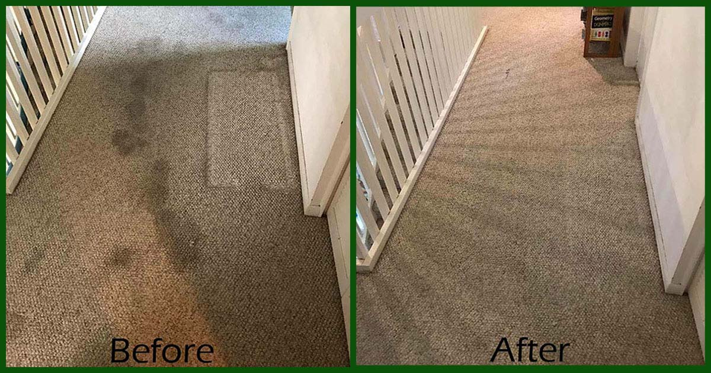
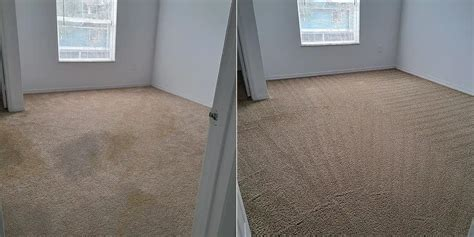
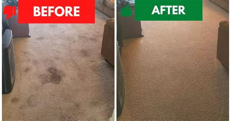

Standard cleaning
$99
Up to 5 rooms, 2 hallways and 1 standard staircase.
- Professional low-moisture cleaning
- Counter-rotating brush agitation
- Additional areas, rooms, hallways or staircases: $15 each
Up to 5 rooms + 2 hallways + 1 standard staircase
Owner-operated, low-moisture cleaning. $99 standard or $149 with pet treatment, plus applicable tax. Weekday appointments; no same-day service.
Local owner at every visit • Typically dries in 1.5–2 hours • Within about 15 miles of downtown
See the complete, unfiltered review history on Housecall Pro.
Read all reviews“Professional, friendly, and affordable.”
“Communication was great, and he did a fantastic job.”
“Very reasonable and professional.”
A clearer way to book
From price to appointment
Start with the package and add-ons that match your space.
Housecall Pro shows the future appointments currently available.
Your confirmation and appointment reminders arrive through Housecall Pro.
Carpet cleaning packages
Both packages cover up to five rooms, two hallways and one standard staircase. Each additional area, room, hallway, or staircase beyond the package is $15, plus applicable tax.
Standard cleaning
Up to 5 rooms, 2 hallways and 1 standard staircase.
Pet-treatment cleaning
The same large cleaning area with pet treatment included.
Plus applicable tax. Exceptionally large or unusual spaces can be discussed before service.
$75 for general cleaning of up to 3 areas/rooms. Pet treatment is not included. $85 for up to 3 rooms with pet treatment. Both smaller packages are available in online booking. Plus applicable tax.
Additional areas, rooms, hallways, or staircases beyond your package are $15 each, plus applicable tax. Add-ons are not standalone visits. Closets stay included in their room. Use the booking calculator to choose a package and add the number of extra areas.
Plus applicable tax. Specialty fabrics, heavy staining, oversized pieces, and unlisted furniture need review.
Plus applicable tax. Standard ceramic or porcelain floor tile. Larger areas, showers, walls, natural stone, specialty surfaces, heavy buildup, or sealing outside the whole-floor package need review.
Plus applicable tax. No sanding or refinishing. Larger areas, staircases, specialty surfaces, or damaged finishes need review.
One local operation
Keith runs Wichita Carpet Cleaning Services as a one-person, owner-operated business. The person responsible for the standard is the person who arrives for the work. Prices and service scope are shown before booking, while Housecall Pro handles available times, confirmations, and reminders without a commissioned sales process.
Service is available within about 15 miles of downtown Wichita. Have a larger space, an unusual layout, or questions about pet odor? Contact the company before choosing a package. Cleaning results depend on the carpet and the condition of the affected area; permanent stain or odor removal cannot be promised.
The cleaning process
Wichita dust, tracked-in soil, and everyday traffic are treated with professional cleaning chemistry and counter-rotating agitation without heavily saturating the carpet.
The carpet condition, traffic areas, and spots are reviewed before cleaning begins.
A professional cleaning solution is applied to loosen embedded soil.
Professional cleaning chemistry works with brush agitation to release soil from the carpet fibers.
Counter-rotating brushes work through the pile to lift and loosen soil from multiple directions.
The carpet is given a final groom as appropriate and typically dries in 1.5–2 hours.
This is professional low-moisture carpet cleaning. Dry time and results vary with airflow, humidity, carpet construction, soil, and prior damage. See how the complete process works.
Why low moisture
Carpet typically dries in about 1.5 to 2 hours. Conditions vary with airflow, humidity and carpet construction.
The process uses substantially less moisture than heavily saturated cleaning methods.
Counter-rotating brushes work through the carpet pile to lift and loosen soil from multiple directions.
One local owner is accountable for the booking experience and the work in your home.
Completed cleaning results
These before-and-after comparisons show real completed carpet-cleaning work. Every carpet is different, so results depend on fiber, wear, soil, staining, prior treatment, and damage.

BeforeAfter
BeforeAfter
BeforeAfterOther services
Review the scope, current prices, and booking details for each service before leaving the website.
Wichita-area service
Service is centered on Wichita and extends to nearby addresses within about 15 miles of downtown. Derby, Andover, Goddard, and Maize are common examples, but the exact address determines availability.
Contact
Text Wichita Carpet Cleaning Services at (316) 232-8111 for existing appointments, service concerns, or commercial inquiries. Messages go to the managed Housecall Pro customer inbox. For commercial work, include the type of space and approximate size. A message does not confirm or change an appointment.
Common questions
Yes. The standard offer covers up to 5 rooms, 2 hallways and one standard staircase, plus applicable tax.
Each additional area, room, hallway, or staircase beyond your carpet package is $15, plus applicable tax. This is an add-on, not a standalone visit.
Choose the $149 pet-treatment cleaning option, which includes the main cleaning package plus pet treatment.
Carpet typically dries in about 1.5 to 2 hours. Actual time varies with humidity, airflow, carpet construction and soil conditions.
Please clear small loose items and breakables when convenient. Standard couches and loveseats can be moved when practical; beds, large sectionals, and other heavy furniture need to be moved before arrival if you want the carpet beneath them cleaned. See the simple preparation guide.
No. The booking page shows the next available future appointment times.
No. Appointments are available Monday through Friday only.
There is no cancellation fee. Please give as much notice as possible. Reply to your Housecall Pro text or text (316) 232-8111; a change or cancellation is not final until the company confirms it.
Wichita and surrounding areas (within about 15 miles of downtown). Derby, Andover, Goddard, and Maize are common examples inside that ring. On-base military housing is not serviced.
Ready when you are
Up to 5 rooms + 2 hallways + 1 standard staircase.
Each additional area, room, hallway, or staircase: $15. Pet-treatment cleaning $149. Plus applicable tax.
Automated website assistant. For appointment changes or personal details, text (316) 232-8111 or open Messenger.